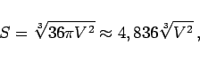
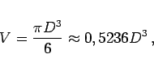

Inhalt Index DeskTop Bronstein

 Geometrie Stereometrie Körper, die durch gekrümmte Flächen begrenzt sind Kugel und Kugelteile
Geometrie Stereometrie Körper, die durch gekrümmte Flächen begrenzt sind Kugel und Kugelteile


Die Kugel besitze den Radius R und den Durchmesser .

Jeder ebene Kugelschnitt ergibt einen Kreis. Ein ebener Schnitt durch den Kugelmittelpunkt ergibt einen Großkreis mit dem Radius R. Durch je zwei nicht diametral gegenüberliegende Kugeloberflächenpunkte kann immer nur ein Großkreis gelegt werden. Die kürzeste Verbindungslinie zwischen zwei Kugeloberflächenpunkten auf der Kugeloberfläche ist der Bogen des Großkreises.
Formeln für die Kugeloberfläche und das Kugelvolumen:
| (3.160a) |
| (3.160b) |
|  | (3.160c) |
| (3.161a) |
|  | (3.161b) |
| (3.161c) |
| (3.162a) |
| (3.162b) |